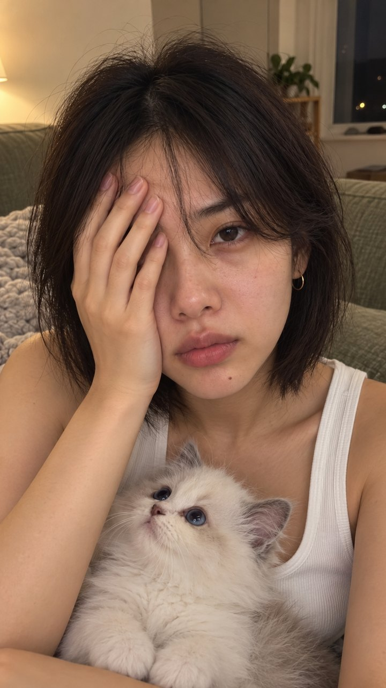
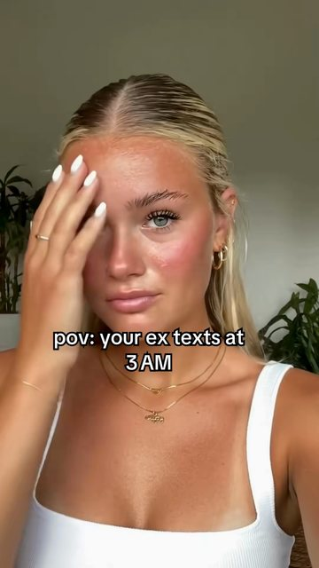

Nicole looks back, silent, on Latte's first night home (20 Sep); then Catwise reads her clips of that night: Latte hid under the sofa, and what it means. The viewer's moment: a first-time owner the night a new kitten comes home, the kitten hiding under the sofa.
The hook a silent reaction, the hook as text · generated · $0.50 a run
“my kitten's first night home. wish I'd had THIS”on screen, top, 0.0–3.0 s
Nicole, chest-up at arm's length, on the sage sofa in lamp light: one hand over her forehead and eye, eyes closed as she tilts into it, the hand slides to her cheek, then she looks up at the camera, tired and soft. Latte held in her other arm against her chest at the bottom of the frame, head and ears in view (forearm-size kitten, round pupils); Latte looks up, blinks and settles. No words; the hook is the text overlay.
The reaction · @ventnowapp · 0–2.75 s · from the reaction library
Nicole copies the motion of this clip, in time:

The app · Reveal the viewer must recognise it
Rebuilt from the app's real screens and animated, never filmed and never from a video model.
Full screen: the Catwise reveal. Two clips of Latte upload in a stack (“Two moments of Latte, about to be read”; the front clip shows Latte peeking out from under the sage sofa in lamp light); the front clip grows into the stage card and the loader says “Reading your first moment…”.
The app screen needs no keyframe: it is rebuilt from the app's screens and checked at the review stage.
The result · Reveal the viewer must read it
Rebuilt from the app's real screens and animated.
“Here's what we made of Latte's night”: the card “What we saw” lands and its words fade in, then “What this means” lands on top with the read and one thing to try, and holds to the end.
The result, word for word: “A kitten in a new home can hide until she feels safe, and that can take weeks. Don't try to coax her out. Give her time.”
Needs no keyframe. Rendered with the part above.
♪ a library track, chosen in the TikTok app; never the brand's own sound
latte-2026-10-20-reaction-firstnight